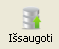

Norint sukurti naują naudotoją, reikia:
- Kairėje interfeiso pusėje pasirinkti kortelę Naudotojai.
- Dešinėje interfeiso pusėje pasirinkti kortelę Naud. adm.
- Korelelės Naudotojai lentelėje pridėti naują įrašą su kuriamo naudotojo vardu.
- Vieną kartą paspaudus ant naujai sukurto naudotojo bus leista keisti jo privilegijas.
- Kortelėje Naud. adm. pasirinkti naudotojo privilegijas ir slaptažodį.
- Išsaugoti pakeitimus paspaudžiant .
Atlikus šiuos žingsnius bus iškarto galima prisijungti prie naujosios paskyros.